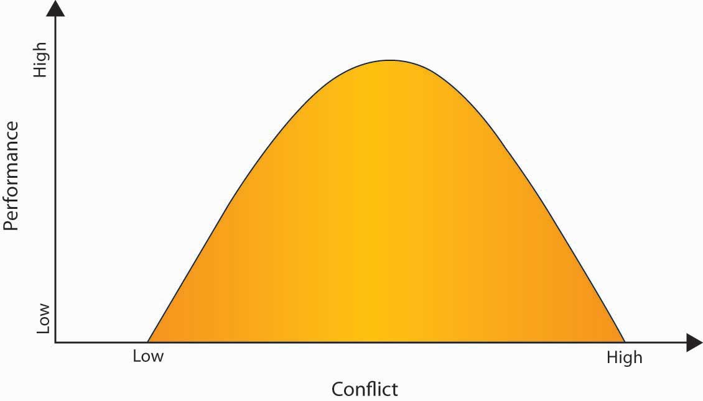
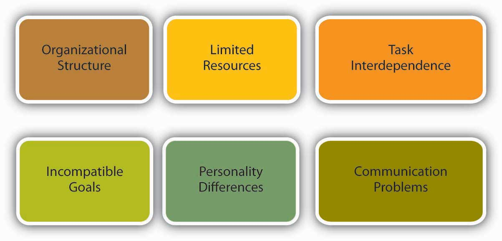
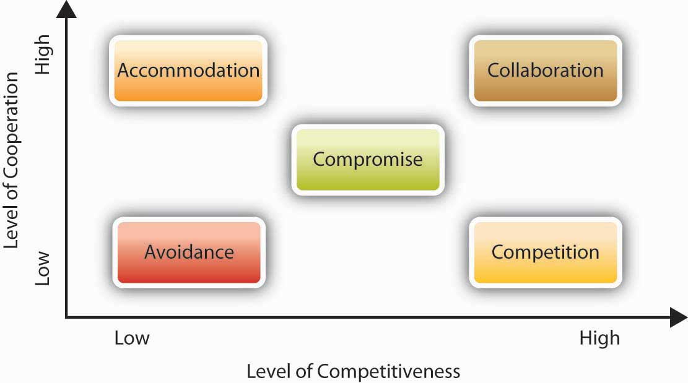
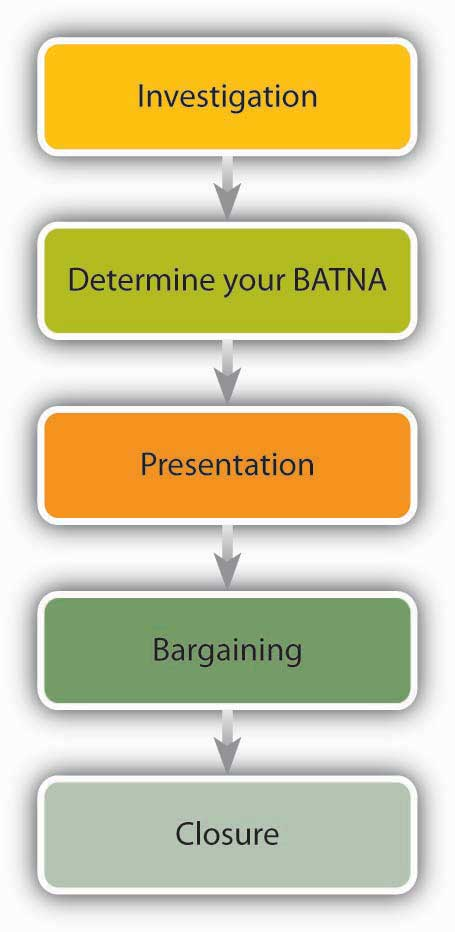

After reading this chapter, you should be able to do the following:
In 1997, a company called PointCast Network Inc. was the hottest start-up in Silicon Valley. Its founder and CEO, Christopher Hassett, was “the most famous guy on the Internet,” said Hassett’s former attorney, Allen Morgan. Hassett was named CNET’s newsmaker of the year—an honor previously bestowed on giants such as Bill Gates of Microsoft and Larry Ellison of Oracle. The “push technology” that PointCast pioneered was making headlines as well as being featured on the cover of Wired as “The Radical Future of the Media beyond the Web.”
All the attention around PointCast motivated one of the world’s largest communications companies—Rupert Murdoch’s News Corporation—to make them an offer of $450 million. Negotiations were intense and lasted weeks. With media speculation that PointCast—a company with almost no revenue—deserved to be valued at $750 million, some people say Hassett started believing the hype and, with the support of his board, asked for more money. “People involved in the company thought they’d be the next Netscape. They hung out for more,” Murdoch said. News Corporation instead lowered its initial offer to $400 million but added incentive clauses that brought the offer close to the original $450 million if PointCast met its financial projections.
PointCast also rejected that offer, and News Corporation walked away from the bargaining table. The timing couldn’t have been worse for PointCast, as “push” technology became old news thanks to the maturing of alternatives such as Yahoo! By the time PointCast decided to go public in 1998, the company was valued at half of News Corporation’s last offer. Worse, the process of filing an initial public offering (IPO) requires the company to disclose all potential dangers to investors. PointCast’s disclosures—such as news that customers had left because of poor performance—scared off so many investors that PointCast ultimately withdrew its IPO. By that time Hassett had been forced out by the board, but the company never fully recovered. In the end, PointCast was acquired in 1999 by Idealab for $7 million. In this case, stalled negotiations cost the firm a steep price of $443 million.
Referring to the missed opportunity, an industry expert said, “It may go down as one of the biggest mistakes in Internet history.” According to Steve Lippin, writing in the Wall Street Journal, “Merger professionals point to these euphemistically called ‘social issues’—ego and corporate pride, that is—as among the most difficult aspects of negotiating multibillion-dollar mergers these days. Although financial issues can be vexing too, these social issues can be deal-breakers.”
In a similar and more recent situation in 2008, Yahoo! CEO Jerry Yang was ousted by the board of directors following failed deals with Microsoft and Google. Yang’s behavior during negotiations indicated that he wasn’t interested in bargaining as much as playing “hard to get.” He “kept saying we should get more money, we should get more money, and [he was] not realizing how precarious their position was,” says high-tech analyst Rob Enderle. In other words, even deals that look great financially can fall apart if participants fail to pay attention to organizational behavior issues such as perception, groupthink, and power and influence.
Case written by [citation redacted per publisher request]. Based on information from Arnoldy. B. (2008, November 19). Why Yahoo’s Jerry Yang stepped down. Christian Science Monitor. Retrieved January 20, 2009, from http://www.csmonitor.com/2008/1119/p02s01-usec.html; Auletta, K. (1998, November 19). The last sure thing. New Yorker; Lipin, S. (1996, August 22). In many merger deals, ego and pride play big roles in which way talks go. Wall Street Journal, Eastern edition, p. C1; PointCast fire sale. (1999, May 11). Wired. Retrieved November 14, 2008, from http://www.wired.com/techbiz/media/news/1999/05/19618.
Let’s take a closer look at these social issues such as conflict to understand how they can derail companies and individuals alike—and what to do to prevent such consequences from happening to you. In this chapter, you’ll see that managing conflict and engaging in effective negotiation are both key for effective organizational behavior within organizations as well as daily life. Conflicts range from minor annoyances to outright violence. For example, one million workers (18,000 people per week) are assaulted on the job in the United States alone.National Institute for Occupational Safety and Health. (1997). Violence in the workplace. Retrieved November 14, 2008, from http://www.cdc.gov/niosh/violfs.html. One of the major ways to avoid conflicts escalating to these levels is through understanding the causes of conflict and developing methods for managing potential negative outcomes. Negotiation is one of the most effective ways to decrease conflict and will also be examined in depth in this chapter.
Similar to how conflicts can range from minor to major, negotiations vary in terms of their consequences. A high-stakes negotiation at work might mean the difference between a company’s survival and its demise. On the other end of the spectrum, we deal with minor negotiations on a regular basis, such as negotiating with a coworker about which movie to see. Maybe you make a concession: “OK, we’ll watch what you want but I get to pick where we eat.” Maybe you hold tough: “I don’t want to watch anything except a comedy.” Perhaps you even look for a third option that would mutually satisfy both parties. Regardless of the level, conflict management and negotiation tactics are important skills that can be learned. First, let’s take a deeper look at conflict.
ConflictA process that involves people disagreeing. is a process that involves people disagreeing. Researchers have noted that conflict is like the common cold. Everyone knows what it is, but understanding its causes and how to treat it is much more challenging.Wall, J. A., & Callister, R. R. (1995). Conflict and its management. Journal of Management, 21, 515–558. As we noted earlier, conflict can range from minor disagreements to workplace violence. In addition, there are three types of conflict that can arise within organizations. Let’s take a look at each of them in turn.
Intrapersonal conflictConflict that arises within a person. arises within a person. For example, when you’re uncertain about what is expected or wanted, or you have a sense of being inadequate to perform a task, you are experiencing intrapersonal conflict. Intrapersonal conflict can arise because of differences in roles. A manager may want to oversee a subordinate’s work, believing that such oversight is a necessary part of the job. The subordinate, on the other hand, may consider such extensive oversight to be micromanagement or evidence of a lack of trust. Role conflict, another type of intrapersonal conflict, includes having two different job descriptions that seem mutually exclusive. This type of conflict can arise if you’re the head of one team but also a member of another team. A third type of intrapersonal conflict involves role ambiguity. Perhaps you’ve been given the task of finding a trainer for a company’s business writing training program. You may feel unsure about what kind of person to hire—a well-known but expensive trainer or a local, unknown but low-priced trainer. If you haven’t been given guidelines about what’s expected, you may be wrestling with several options.
Figure 10.2
Of the conflict between Michael Dell (shown here) and Steve Jobs, David Yoffie, a professor at the Harvard Business School who closely follows the computer industry, notes that the conflict may stem from their differences in terms of being from different generations and having different management styles.
Interpersonal conflictA type of conflict between two people. is among individuals such as coworkers, a manager and an employee, or CEOs and their staff. For example, in 2006 the CEO of Airbus S.A.S., Christian Streiff, resigned because of his conflict with the board of directors over issues such as how to restructure the company.Michaels, D., Power, S., & Gauthier-Villars, D. (2006, October 10). Airbus CEO’s resignation reflects company’s deep structural woes. Wall Street Journal, pp. A1–A10. This example may reflect a well-known trend among CEOs. According to one estimate, 31.9% of CEOs resigned from their jobs because they had conflict with the board of directors.Whitehouse, K. (2008, January 14). Why CEOs need to be honest with their boards. Wall Street Journal, Eastern edition, pp. R1–R3. CEOs of competing companies might also have public conflicts. In 1997, Michael Dell was asked what he would do about Apple Computer. “What would I do? I’d shut it down and give the money back to shareholders.” Ten years later, Steve Jobs, the CEO of Apple Inc., indicated he had clearly held a grudge as he shot back at Dell in an e-mail to his employees, stating, “Team, it turned out Michael Dell wasn’t perfect in predicting the future. Based on today’s stock market close, Apple is worth more than Dell.”Haddad, C. (2001, April 18). Why Jobs and Dell are always sparring. Business Week Online. Retrieved May 1, 2008, from http://www.businessweek.com/bwdaily/dnflash/apr2001/nf20010418_461.htm; Markoff, J. (2006, January 16). Michael Dell should eat his words, Apple chief suggests. New York Times. Retrieved January 19, 2007, from http://www.nytimes.com/2006/01/16/technology/16apple.html. In part, their long-time disagreements stem from their differences. Interpersonal conflict often arises because of competition, as the Dell/Apple example shows, or because of personality or values differences. For example, one person’s style may be to “go with the gut” on decisions, while another person wants to make decisions based on facts. Those differences will lead to conflict if the individuals reach different conclusions. Many companies suffer because of interpersonal conflicts. Keeping conflicts centered around ideas rather than individual differences is important in avoiding a conflict escalation.
Figure 10.3
Conflicts such as the Air Canada pilot strike can have ripple effects. For example, Air Canada’s parent company threatened to cancel a $6.1 billion contract with Boeing for new planes if they were unable to negotiate an agreement with the pilots who would fly them. Conflict consequences such as these could affect those working at this Boeing Factory in Seattle, Washington.
Intergroup conflictConflict that takes place among different groups, such as different departments or divisions in a company, or between union and management, or between companies, such as companies who supply the same customer. is conflict that takes place among different groups. Types of groups may include different departments or divisions in a company, and employee union and management, or competing companies that supply the same customers. Departments may conflict over budget allocations; unions and management may disagree over work rules; suppliers may conflict with each other on the quality of parts. Merging two groups together can lead to friction between the groups—especially if there are scarce resources to be divided among the group. For example, in what has been called “the most difficult and hard-fought labor issue in an airline merger,” Canadian Air and Air Canada pilots were locked into years of personal and legal conflict when the two airlines’ seniority lists were combined following the merger.Stoykewych, R. E. (2003, March 7). A note on the seniority resolutions arising out of the merger of Air Canada and Canadian Airlines. Paper presented at the American Bar Association Midwinter Meeting, Laguna Beach, CA. Seniority is a valuable and scarce resource for pilots, because it helps to determine who flies the newest and biggest planes, who receives the best flight routes, and who is paid the most. In response to the loss of seniority, former Canadian Air pilots picketed at shareholder meetings, threatened to call in sick, and had ongoing conflicts with pilots from Air Canada. The conflicts with pilots continue to this day. The history of past conflicts among organizations and employees makes new deals challenging.
Most people are uncomfortable with conflict, but is conflict always bad? Conflict can be dysfunctional if it paralyzes an organization, leads to less than optimal performance, or, in the worst case, leads to workplace violence. Surprisingly, a moderate amount of conflict can actually be a healthy (and necessary) part of organizational life.Amason, A. C. (1996). Distinguishing the effects of functional and dysfunctional conflict on strategic decision making: Resolving a paradox for top management teams. Academy of Management Journal, 39, 123–148. To understand how to get to a positive level of conflict, we need to understand its root causes, consequences, and tools to help manage it. The impact of too much or too little conflict can disrupt performance. If conflict is too low, then performance is low. If conflict is too high, then performance also tends to be low. The goal is to hold conflict levels in the middle of this range. While it might seem strange to want a particular level of conflict, a medium level of task-related conflict is often viewed as optimal, because it represents a situation in which a healthy debate of ideas takes place.
Figure 10.4 The Inverted U Relationship Between Performance and Conflict
Task conflict can be good in certain circumstances, such as in the early stages of decision making, because it stimulates creativity. However, it can interfere with complex tasks in the long run.De Dreu, C. K. W., & Weingart, L. R. (2003). Task versus relationship conflict: Team performance, and team member satisfaction: A meta-analysis. Journal of Applied Psychology, 88, 741–749. Personal conflicts, such as personal attacks, are never healthy because they cause stress and distress, which undermines performance. The worst cases of personal conflicts can lead to workplace bullying. At Intel Corporation, all new employees go through a 4-hour training module to learn “constructive confrontation.” The content of the training program includes dealing with others in a positive manner, using facts rather than opinion to persuade others, and focusing on the problem at hand rather than the people involved. “We don’t spend time being defensive or taking things personally. We cut through all of that and get to the issues,” notes a trainer from Intel University.Dahle, C. (2001, June). Is the Internet second nature? Fast Company, 48, 144. The success of the training remains unclear, but the presence of this program indicates that Intel understands the potentially positive effect of a moderate level of conflict. Research focusing on effective teams across time found that they were characterized by low but increasing levels of process conflict (how do we get things done?), low levels of relationship conflict with a rise toward the end of the project (personal disagreements among team members), and moderate levels of task conflict in the middle of the task time line.Jehn, K. A., & Mannix, E. A. (2001). The dynamic nature of conflict: A longitudinal study of intergroup conflict and group performance. Academy of Management Journal, 44, 238–251.
Conflict can be a problem for individuals and organizations. There are several different types of conflict, including intrapersonal, interpersonal, and intergroup conflict. Moderate conflict can be a healthy and necessary part of organizational life.
There are many potential root causes of conflict at work. We’ll go over six of them here. Remember, anything that leads to a disagreement can be a cause of conflict. Although conflict is common to organizations, some organizations have more than others.
Figure 10.5 Potential Causes of Conflict
Conflict tends to take different forms, depending upon the organizational structure.Jaffe, D. (2000). Organizational theory: Tension and change. New York: McGraw Hill. For example, if a company uses a matrix structure as its organizational form, it will have decisional conflict built in, because the structure specifies that each manager report to two bosses. For example, global company ABB Inc. is organized around a matrix structure based on the dimensions of country and industry. This structure can lead to confusion as the company is divided geographically into 1,200 different units and by industry into 50 different units.Taylor, W. (1991, March–April). The logic of global business: An interview with ABB’s Percy Barnevik. Harvard Business Review, 69, 90–105.
Resources such as money, time, and equipment are often scarce. Competition among people or departments for limited resources is a frequent cause for conflict. For example, cutting-edge laptops and gadgets such as a BlackBerry or iPhone are expensive resources that may be allocated to employees on a need-to-have basis in some companies. When a group of employees have access to such resources while others do not, conflict may arise among employees or between employees and management. While technical employees may feel that these devices are crucial to their productivity, employees with customer contact such as sales representatives may make the point that these devices are important for them to make a good impression to clients. Because important resources are often limited, this is one source of conflict many companies have to live with.
Another cause of conflict is task interdependence; that is, when accomplishment of your goal requires reliance on others to perform their tasks. For example, if you’re tasked with creating advertising for your product, you’re dependent on the creative team to design the words and layout, the photographer or videographer to create the visuals, the media buyer to purchase the advertising space, and so on. The completion of your goal (airing or publishing your ad) is dependent on others.
Sometimes conflict arises when two parties think that their goals are mutually exclusive. Within an organization, incompatible goals often arise because of the different ways department managers are compensated. For example, a sales manager’s bonus may be tied to how many sales are made for the company. As a result, the individual might be tempted to offer customers “freebies” such as expedited delivery in order to make the sale. In contrast, a transportation manager’s compensation may be based on how much money the company saves on transit. In this case, the goal might be to eliminate expedited delivery because it adds expense. The two will butt heads until the company resolves the conflict by changing the compensation scheme. For example, if the company assigns the bonus based on profitability of a sale, not just the dollar amount, the cost of the expediting would be subtracted from the value of the sale. It might still make sense to expedite the order if the sale is large enough, in which case both parties would support it. On the other hand, if the expediting negates the value of the sale, neither party would be in favor of the added expense.
Personality differences among coworkers are common. By understanding some fundamental differences among the way people think and act, we can better understand how others see the world. Knowing that these differences are natural and normal lets us anticipate and mitigate interpersonal conflict—it’s often not about “you” but simply a different way of seeing and behaving. For example, Type A individuals have been found to have more conflicts with their coworkers than Type B individuals.Baron, R. A. (1989). Personality and organizational conflict: Type A behavior pattern and self-monitoring. Organizational Behavior and Human Decision Processes, 44, 281–297.
Sometimes conflict arises simply out of a small, unintentional communication problem, such as lost e-mails or dealing with people who don’t return phone calls. Giving feedback is also a case in which the best intentions can quickly escalate into a conflict situation. When communicating, be sure to focus on behavior and its effects, not on the person. For example, say that Jeff always arrives late to all your meetings. You think he has a bad attitude, but you don’t really know what Jeff’s attitude is. You do know, however, the effect that Jeff’s behavior has on you. You could say, “Jeff, when you come late to the meeting, I feel like my time is wasted.” Jeff can’t argue with that statement, because it is a fact of the impact of his behavior on you. It’s indisputable, because it is your reality. What Jeff can say is that he did not intend such an effect, and then you can have a discussion regarding the behavior.
In another example, the Hershey Company was engaged in talks behind closed doors with Cadbury Schweppes about a possible merger. No information about this deal was shared with Hershey’s major stakeholder, the Hershey Trust. When Robert Vowler, CEO of the Hershey Trust, discovered that talks were underway without anyone consulting the Trust, tensions between the major stakeholders began to rise. As Hershey’s continued to underperform, steps were taken in what is now called the “Sunday night massacre,” in which several board members were forced to resign and Richard Lenny, Hershey’s then current CEO, retired.Jargon, J., Karnitschnig, M., & Lublin, J. S. (2008, February 23). How Hershey went sour. Wall Street Journal, pp. B1, B5. This example shows how a lack of communication can lead to an escalation of conflict. Time will tell what the lasting effects of this conflict will be, but in the short term, effective communication will be the key. Now, let’s turn our attention to the outcomes of conflict.
One of the most common outcomes of conflict is that it upsets parties in the short run.Bergman, T. J., & Volkema, R. J. (1989). Understanding and managing interpersonal conflict at work: Its issues, interactive processes and consequences. In D. M. Kolb & J. M. Kolb (Eds.), Hidden conflict in organizations (pp. 7–19). Newbury Park, CA: Sage. However, conflict can have both positive and negative outcomes. On the positive side, conflict can result in greater creativity or better decisions. For example, as a result of a disagreement over a policy, a manager may learn from an employee that newer technologies help solve problems in an unanticipated new way.
Positive outcomes include the following:
On the other hand, conflict can be dysfunctional if it is excessive or involves personal attacks or underhanded tactics.
Examples of negative outcomes include the following:
You may be at increased risk for workplace violence if your job involves the following:
Dealing With People
Being in High-Risk Situations
Sources: Adapted from information in LeBlanc, M. M., & Kelloway, E. K. (2002). Predictors and outcomes of workplace violence and aggression. Journal of Applied Psychology, 87, 444–453; National Institute for Occupational Safety and Health. (1997). Violence in the workplace. Retrieved November 12, 2008, from http://www.cdc.gov/niosh/violfs.html; National Institute for Occupational Safety and Health. (2006). Workplace prevention strategies and research needs. Retrieved November 12, 2008, from http://www.cdc.gov/niosh/docs/2006-144/.
Given these negative outcomes, how can conflict be managed so that it does not become dysfunctional or even dangerous? We’ll explore this in the next section.
Conflict has many causes, including organizational structures, limitations on resources, task interdependence, goal incompatibility, personality differences, and communication challenges. Outcomes of well-managed conflict include increased participation and creativity, while negatives of poorly managed conflict include increased stress and anxiety. Jobs that deal with people are at higher risk for conflict.
There are a number of different ways of managing organizational conflict, which are highlighted in this section. Conflict managementResolving disagreements effectively. refers to resolving disagreements effectively.
When structure is a cause of dysfunctional conflict, structural change can be the solution to resolving the conflict. Consider this situation. Vanessa, the lead engineer in charge of new product development, has submitted her components list to Tom, the procurement officer, for purchasing. Tom, as usual, has rejected two of the key components, refusing the expenditure on the purchase. Vanessa is furious, saying, “Every time I give you a request to buy a new part, you fight me on it. Why can’t you ever trust my judgment and honor my request?”
Tom counters, “You’re always choosing the newest, leading-edge parts—they’re hard to find and expensive to purchase. I’m supposed to keep costs down, and your requests always break my budget.”
“But when you don’t order the parts we need for a new product, you delay the whole project,” Vanessa says.
Sharon, the business unit’s vice president, hits upon a structural solution by stating, “From now on, both of you will be evaluated on the total cost and the overall performance of the product. You need to work together to keep component costs low while minimizing quality issues later on.” If the conflict is at an intergroup level, such as between two departments, a structural solution could be to have those two departments report to the same executive, who could align their previously incompatible goals.
If the conflict is between team members, the easiest solution may be to change the composition of the team, separating the personalities that were at odds. In instances in which conflict is attributed to the widely different styles, values, and preferences of a small number of members, replacing some of these members may resolve the problem. If that’s not possible because everyone’s skills are needed on the team and substitutes aren’t available, consider a physical layout solution. Research has shown that when known antagonists are seated directly across from each other, the amount of conflict increases. However, when they are seated side by side, the conflict tends to decrease.Gordon, J., Mondy, R. W., Sharplin, A., & Premeaux, S. R. (1990). Management and organizational behavior. New York: Simon & Schuster, p. 540.
Group conflict within an organization can be mitigated by focusing attention on a common enemy such as the competition. For example, two software groups may be vying against each other for marketing dollars, each wanting to maximize advertising money devoted to their product. But, by focusing attention on a competitor company, the groups may decide to work together to enhance the marketing effectiveness for the company as a whole. The “enemy” need not be another company—it could be a concept, such as a recession, that unites previously warring departments to save jobs during a downturn.
Sometimes a group conflict can be resolved through majority rule. That is, group members take a vote, and the idea with the most votes is the one that gets implemented. The majority rule approach can work if the participants feel that the procedure is fair. It is important to keep in mind that this strategy will become ineffective if used repeatedly with the same members typically winning. Moreover, the approach should be used sparingly. It should follow a healthy discussion of the issues and points of contention, not be a substitute for that discussion.
Problem solving is a common approach to resolving conflict. In problem-solving mode, the individuals or groups in conflict are asked to focus on the problem, not on each other, and to uncover the root cause of the problem. This approach recognizes the rarity of one side being completely right and the other being completely wrong.
Individuals vary in the way that they handle conflicts. There are five common styles of handling conflicts. These styles can be mapped onto a grid that shows the varying degree of cooperation and assertiveness each style entails. Let us look at each in turn.
Figure 10.6 Conflict-Handling Styles
The avoidingAn uncooperative and unassertive conflict-handling style. style is uncooperative and unassertive. People exhibiting this style seek to avoid conflict altogether by denying that it is there. They are prone to postponing any decisions in which a conflict may arise. People using this style may say things such as, “I don’t really care if we work this out,” or “I don’t think there’s any problem. I feel fine about how things are.” Conflict avoidance may be habitual to some people because of personality traits such as the need for affiliation. While conflict avoidance may not be a significant problem if the issue at hand is trivial, it becomes a problem when individuals avoid confronting important issues because of a dislike for conflict or a perceived inability to handle the other party’s reactions.
The accommodatingA cooperative and unassertive conflict-handling style. style is cooperative and unassertive. In this style, the person gives in to what the other side wants, even if it means giving up one’s personal goals. People who use this style may fear speaking up for themselves or they may place a higher value on the relationship, believing that disagreeing with an idea might be hurtful to the other person. They will say things such as, “Let’s do it your way” or “If it’s important to you, I can go along with it.” Accommodation may be an effective strategy if the issue at hand is more important to others compared to oneself. However, if a person perpetually uses this style, that individual may start to see that personal interests and well-being are neglected.
The compromisingA middle-ground conflict-handling style, in which a person has some desire to express their own concerns and get their way but still respects the other person’s goals as well. style is a middle-ground style, in which individuals have some desire to express their own concerns and get their way but still respect the other person’s goals. The compromiser may say things such as, “Perhaps I ought to reconsider my initial position” or “Maybe we can both agree to give in a little.” In a compromise, each person sacrifices something valuable to them. For example, in 2005 the luxurious Lanesborough Hotel in London advertised incorrect nightly rates for £35, as opposed to £350. When the hotel received a large number of online bookings at this rate, the initial reaction was to insist that customers cancel their reservations and book at the correct rate. The situation was about to lead to a public relations crisis. As a result, they agreed to book the rooms at the advertised price for a maximum of three nights, thereby limiting the damage to the hotel’s bottom line as well as its reputation.Horowitz, A., Jacobson, D., Lasswell, M., & Thomas, O. (2006, January–February). 101 dumbest moments in business. Business 2.0, 7(1), 98–136.
People exhibiting a competingA conflict-handling style that is highly assertive but low on cooperation. style want to reach their goal or get their solution adopted regardless of what others say or how they feel. They are more interested in getting the outcome they want as opposed to keeping the other party happy, and they push for the deal they are interested in making. Competition may lead to poor relationships with others if one is always seeking to maximize their own outcomes at the expense of others’ well-being. This approach may be effective if one has strong moral objections to the alternatives or if the alternatives one is opposing are unethical or harmful.
The collaboratingA conflict-handling style that is high on both assertiveness and cooperation. style is high on both assertiveness and cooperation. This is a strategy to use for achieving the best outcome from conflict—both sides argue for their position, supporting it with facts and rationale while listening attentively to the other side. The objective is to find a win–win solution to the problem in which both parties get what they want. They’ll challenge points but not each other. They’ll emphasize problem solving and integration of each other’s goals. For example, an employee who wants to complete an MBA program may have a conflict with management when he wants to reduce his work hours. Instead of taking opposing positions in which the employee defends his need to pursue his career goals while the manager emphasizes the company’s need for the employee, both parties may review alternatives to find an integrative solution. In the end, the employee may decide to pursue the degree while taking online classes, and the company may realize that paying for the employee’s tuition is a worthwhile investment. This may be a win–win solution to the problem in which no one gives up what is personally important, and every party gains something from the exchange.
Like much of organizational behavior, there is no one “right way” to deal with conflict. Much of the time it will depend on the situation. However, the collaborative style has the potential to be highly effective in many different situations.
We do know that most individuals have a dominant style that they tend to use most frequently. Think of your friend who is always looking for a fight or your coworker who always backs down from a disagreement. Successful individuals are able to match their style to the situation. There are times when avoiding a conflict can be a great choice. For example, if a driver cuts you off in traffic, ignoring it and going on with your day is a good alternative to “road rage.” However, if a colleague keeps claiming ownership of your ideas, it may be time for a confrontation. Allowing such intellectual plagiarism to continue could easily be more destructive to your career than confronting the individual. Research also shows that when it comes to dealing with conflict, managers prefer forcing, while their subordinates are more likely to engage in avoiding, accommodating, or compromising.Howat, G., & London, M. (1980). Attributions of conflict management strategies in supervisor-subordinate dyads. Journal of Applied Psychology, 65, 172–175. It is also likely that individuals will respond similarly to the person engaging in conflict. For example, if one person is forcing, others are likely to respond with a forcing tactic as well.
Part of effective conflict management is knowing when proper stimulation is necessary. Many people think that conflict is inherently bad—that it undermines goals or shows that a group or meeting is not running smoothly. In fact, if there is no conflict, it may mean that people are silencing themselves and withholding their opinions. The reality is that within meaningful group discussions there are usually varying opinions about the best course of action. If people are suppressing their opinions, the final result may not be the best solution. During healthy debates, people point out difficulties or weaknesses in a proposed alternative and can work together to solve them. The key to keeping the disagreement healthy is to keep the discussion focused on the task, not the personalities. For example, a comment such as “Jack’s ideas have never worked before. I doubt his current idea will be any better” is not constructive. Instead, a comment such as “This production step uses a degreaser that’s considered a hazardous material. Can we think of an alternative degreaser that’s nontoxic?” is more productive. It challenges the group to improve upon the existing idea.
Traditionally, Hewlett-Packard Development Company LP was known as a “nice” organization. Throughout its history, HP viewed itself as a scientific organization, and their culture valued teamwork and respect. But over time, HP learned that you can be “nice to death.” In fact, in the 1990s, HP found it difficult to partner with other organizations because of their culture differences. During role plays created to help HP managers be more dynamic, the trainers had to modify several role-plays, because participants simply said, “That would never happen at HP,” over the smallest conflict. All this probably played a role in the discomfort many felt with Carly Fiorina’s style as CEO and the merge she orchestrated with Compaq Computer Corporation, which ultimately caused the board of directors to fire Fiorina. On the other hand, no one is calling HP “too nice” anymore.
Conflict management techniques include changing organizational structures to avoid built-in conflict, changing team members, creating a common “enemy,” using majority rules, and problem solving. Conflict management styles include accommodating others, avoiding the conflict, collaborating, competing, and compromising. People tend to have a dominant style. At times it makes sense to build in some conflict over ideas if none exists.
A common way that parties deal with conflict is via negotiation. NegotiationA process whereby two or more parties work toward an agreement. is a process whereby two or more parties work toward an agreement. There are five phases of negotiation, which are described below.
Figure 10.8 The Five Phases of Negotiation
The first step in negotiation is the investigationThe first step in negotiation in which information is gathered., or information gathering stage. This is a key stage that is often ignored. Surprisingly, the first place to begin is with yourself: What are your goals for the negotiation? What do you want to achieve? What would you concede? What would you absolutely not concede? Leigh Steinberg, the most powerful agent in sports (he was the role model for Tom Cruise’s character in Jerry Maguire), puts it this way: “You need the clearest possible view of your goals. And you need to be brutally honest with yourself about your priorities.”Webber, A. (1998, October). How to get them to show you the money. Fast Company, 198. Retrieved November 14, 2008, from http://www.fastcompany.com/magazine/19/showmoney.html.
During the negotiation, you’ll inevitably be faced with making choices. It’s best to know what you want, so that in the heat of the moment you’re able to make the best decision. For example, if you’ll be negotiating for a new job, ask yourself, “What do I value most? Is it the salary level? Working with coworkers whom I like? Working at a prestigious company? Working in a certain geographic area? Do I want a company that will groom me for future positions or do I want to change jobs often in pursuit of new challenges?”
If you don’t know where you’re going, you will probably end up somewhere else.
Lawrence J. Peter
One important part of the investigation and planning phase is to determine your BATNAStands for the “best alternative to a negotiated agreement.” Determining your BATNA is one important part of the investigation and planning phase in negotiation., which is an acronym that stands for the “best alternative to a negotiated agreement.” Roger Fisher and William Ury coined this phrase in their book Getting to Yes: Negotiating without Giving In.
Thinking through your BATNA is important to helping you decide whether to accept an offer you receive during the negotiation. You need to know what your alternatives are. If you have various alternatives, you can look at the proposed deal more critically. Could you get a better outcome than the proposed deal? Your BATNA will help you reject an unfavorable deal. On the other hand, if the deal is better than another outcome you could get (that is, better than your BATNA), then you should accept it.
Think about it in common sense terms: When you know your opponent is desperate for a deal, you can demand much more. If it looks like they have a lot of other options outside the negotiation, you’ll be more likely to make concessions.
As Fisher and Ury said, “The reason you negotiate is to produce something better than the results you can obtain without negotiating. What are those results? What is that alternative? What is your BATNA—your Best Alternative To a Negotiated Agreement? That is the standard against which any proposed agreement should be measured.”Fisher, R., & Ury, W. (1981). Getting to yes: Negotiating agreement without giving in. New York: Penguin Books.
The party with the best BATNA has the best negotiating position, so try to improve your BATNA whenever possible by exploring possible alternatives.Pinkley, R. L. (1995). Impact of knowledge regarding alternatives to settlement in dyadic negotiations: Whose knowledge counts? Journal of Applied Psychology, 80, 403–417.
Going back to the example of your new job negotiation, consider your options to the offer you receive. If your pay is lower than what you want, what alternatives do you have? A job with another company? Looking for another job? Going back to school? While you’re thinking about your BATNA, take some time to think about the other party’s BATNA. Do they have an employee who could readily replace you?
Once you’ve gotten a clear understanding of your own goals, investigate the person you’ll be negotiating with. What does that person (or company) want? Put yourself in the other party’s shoes. What alternatives could they have? For example, in the job negotiations, the other side wants a good employee at a fair price. That may lead you to do research on salary levels: What is the pay rate for the position you’re seeking? What is the culture of the company?
Greenpeace’s goals are to safeguard the environment by getting large companies and organizations to adopt more environmentally friendly practices such as using fewer plastic components. Part of the background research Greenpeace engages in involves uncovering facts. For instance, medical device makers are using harmful PVCs as a tubing material because PVCs are inexpensive. But are there alternatives to PVCs that are also cost-effective? Greenpeace’s research found that yes, there are.Layne, A. (1999, November). Conflict resolution at Greenpeace? Fast Company. Retrieved November 14, 2008, from http://www.fastcompany.com/articles/1999/12/rick_hind.html. Knowing this lets Greenpeace counter those arguments and puts Greenpeace in a stronger position to achieve its goals.
Sources: Adapted from information in Spangler, B. (2003, June). Best Alternative to a Negotiated Agreement (BATNA). Retrieved November 12, 2008, from http://www.beyondintractability.org/essay/batna/; Conflict Research Consortium, University of Colorado. (1998). Limits to agreement: Better alternatives. Retrieved November 12, 2008, from http://www.colorado.edu/conflict/peace/problem/batna.htm; Venter, D. (2003). What is a BATNA? Retrieved January 14, 2008, from http://www.negotiationeurope.com/articles/batna.html.
The third phase of negotiation is presentationThe third phase of negotiation.. In this phase, you assemble the information you’ve gathered in a way that supports your position. In a job hiring or salary negotiation situation, for instance, you can present facts that show what you’ve contributed to the organization in the past (or in a previous position), which in turn demonstrates your value. Perhaps you created a blog that brought attention to your company or got donations or funding for a charity. Perhaps you’re a team player who brings out the best in a group.
During the bargainingThe fourth phase of negotiation. phase, each party discusses their goals and seeks to get an agreement. A natural part of this process is making concessionsGiving up one thing to get something else in return., namely, giving up one thing to get something else in return. Making a concession is not a sign of weakness—parties expect to give up some of their goals. Rather, concessions demonstrate cooperativeness and help move the negotiation toward its conclusion. Making concessions is particularly important in tense union-management disputes, which can get bogged down by old issues. Making a concession shows forward movement and process, and it allays concerns about rigidity or closed-mindedness. What would a typical concession be? Concessions are often in the areas of money, time, resources, responsibilities, or autonomy. When negotiating for the purchase of products, for example, you might agree to pay a higher price in exchange for getting the products sooner. Alternatively, you could ask to pay a lower price in exchange for giving the manufacturer more time or flexibility in when they deliver the product.
One key to the bargaining phase is to ask questions. Don’t simply take a statement such as “we can’t do that” at face value. Rather, try to find out why the party has that constraint. Let’s take a look at an example. Say that you’re a retailer and you want to buy patio furniture from a manufacturer. You want to have the sets in time for spring sales. During the negotiations, your goal is to get the lowest price with the earliest delivery date. The manufacturer, of course, wants to get the highest price with the longest lead time before delivery. As negotiations stall, you evaluate your options to decide what’s more important: a slightly lower price or a slightly longer delivery date? You do a quick calculation. The manufacturer has offered to deliver the products by April 30, but you know that some of your customers make their patio furniture selection early in the spring, and missing those early sales could cost you $1 million. So, you suggest that you can accept the April 30 delivery date if the manufacturer will agree to drop the price by $1 million.
“I appreciate the offer,” the manufacturer replies, “but I can’t accommodate such a large price cut.” Instead of leaving it at that, you ask, “I’m surprised that a 2-month delivery would be so costly to you. Tell me more about your manufacturing process so that I can understand why you can’t manufacture the products in that time frame.”
“Manufacturing the products in that time frame is not the problem,” the manufacturer replies, “but getting them shipped from Asia is what’s expensive for us.”
When you hear that, a light bulb goes off. You know that your firm has favorable contracts with shipping companies because of the high volume of business the firm gives them. You make the following counteroffer: “Why don’t we agree that my company will arrange and pay for the shipper, and you agree to have the products ready to ship on March 30 for $10.5 million instead of $11 million?” The manufacturer accepts the offer—the biggest expense and constraint (the shipping) has been lifted. You, in turn, have saved money as well.Adapted from Malhotra, D., & Bazerman, M. H. (2007, September). Investigative negotiation. Harvard Business Review, 85, 72.
ClosureThe last part of negotiation in which you and the other party have either come to an agreement on the terms, or one party has decided that the final offer is unacceptable and therefore must be walked away from. is an important part of negotiations. At the close of a negotiation, you and the other party have either come to an agreement on the terms, or one party has decided that the final offer is unacceptable and therefore must be walked away from. Most negotiators assume that if their best offer has been rejected, there’s nothing left to do. You made your best offer and that’s the best you can do. The savviest of negotiators, however, see the rejection as an opportunity to learn. “What would it have taken for us to reach an agreement?”
Recently, a CEO had been in negotiations with a customer. After learning the customer decided to go with the competition, the CEO decided to inquire as to why negotiations had fallen through. With nothing left to lose, the CEO placed a call to the prospect’s vice president and asked why the offer had been rejected, explaining that the answer would help improve future offerings. Surprisingly, the VP explained the deal was given to the competitor because, despite charging more, the competitor offered after-sales service on the product. The CEO was taken by surprise, originally assuming that the VP was most interested in obtaining the lowest price possible. In order accommodate a very low price, various extras such as after-sales service had been cut from the offer. Having learned that the VP was seeking service, not the lowest cost, the CEO said, “Knowing what I know now, I’m confident that I could have beaten the competitor’s bid. Would you accept a revised offer?” The VP agreed, and a week later the CEO had a signed contract.Malhotra, D., & Bazerman, M. H. (2007, September). Investigative negotiation. Harvard Business Review, 85, 72.
Sometimes at the end of negotiations, it’s clear why a deal was not reached. But if you’re confused about why a deal did not happen, consider making a follow-up call. Even though you may not win the deal back in the end, you might learn something that’s useful for future negotiations. What’s more, the other party may be more willing to disclose the information if they don’t think you’re in a “selling” mode.
Yes! According to a survey conducted by CareerBuilder.com, 58% of hiring managers say they leave some negotiating room when extending initial job offers. The survey also found that many of the hiring managers agree to a candidate’s request for a higher salary. “Salary negotiation has become a growing opportunity in the job acquisition process,” says Bill Hawkins, president and CEO of The Hawkins Company, a full-service executive search firm with offices in Los Angeles and Atlanta. “Candidates who fail to make a counteroffer could forfeit significant income.”
Source: Adapted from information in Reed-Woodard, M. (2007, April). Taking money off the table. Black Enterprise, 37(9), 60–61.
The distributive viewThe traditional fixed-pie approach in which negotiators see the situation as a pie that they have to divide between them. of negotiation is the traditional fixed-pie approach. That is, negotiators see the situation as a pie that they have to divide between them. Each tries to get more of the pie and “win.” For example, managers may compete over shares of a budget. If marketing gets a 10% increase in its budget, another department such as R&D will need to decrease its budget by 10% to offset the marketing increase. Focusing on a fixed pie is a common mistake in negotiation, because this view limits the creative solutions possible.
A newer, more creative approach to negotiation is called the integrative approachAn approach to negotiation in which both parties look for ways to integrate their goals under a larger umbrella.. In this approach, both parties look for ways to integrate their goals under a larger umbrella. That is, they look for ways to expand the pie, so that each party gets more. This is also called a win–win approach. The first step of the integrative approach is to enter the negotiation from a cooperative rather than an adversarial stance. The second step is all about listening. Listening develops trust as each party learns what the other wants and everyone involved arrives at a mutual understanding. Then, all parties can explore ways to achieve the individual goals. The general idea is, “If we put our heads together, we can find a solution that addresses everybody’s needs.” Unfortunately, integrative outcomes are not the norm. A summary of 32 experiments on negotiations found that although they could have resulted in integrated outcomes, only 20% did so.Thompson, L., & Hrebec, D. (1996). Lose-lose agreements in interdependent decision making. Psychological Bulletin, 120, 396–409. One key factor related to finding integrated solutions is the experience of the negotiators who were able to reach them.Thompson, L. (1990). Negotiation behavior and outcomes: Empirical evidence and theoretical issues. Psychological Bulletin, 108, 515–532.
Step 1: Overcome your fear.
Step 2: Get the facts.
Step 3: Build your case.
Step 4: Know what you want.
Step 5: Begin assertively.
Step 6: Don’t make the first offer.
Step 7: Listen more than talk.
Sources: Adapted from information in Brodow, E. (2006). Negotiation boot camp. New York: Currency/Doubleday; Nemko, M. (2007, December 31). The general way to get a raise. U.S. News & World Report, 57.
You may have heard that women typically make less money than men. Researchers have established that about one-third of the gender differences observed in the salaries of men and women can be traced back to differences in starting salaries, with women making less, on average, when they start their jobs.Gerhart, B. (1990). Gender differences in current and starting salaries: The role of performance, college major, and job title. Industrial and Labor Relations Review, 43, 418–433. Some people are taught to feel that negotiation is a conflict situation, and these individuals may tend to avoid negotiations to avoid conflict. Research shows that this negotiation avoidance is especially prevalent among women. For example, one study looked at students from Carnegie-Mellon who were getting their first job after earning a master’s degree. The study found that only 7% of the women negotiated their offer, while men negotiated 57% of the time.CNN. (2003, August 21). Interview with Linda Babcock. Retrieved November 14, 2008, from http://transcripts.cnn.com/TRANSCRIPTS/0308/21/se.04.html. The result had profound consequences. Researchers calculate that people who routinely negotiate salary increases will earn over $1 million more by retirement than people who accept an initial offer every time without asking for more.Babcock, L., & Lascheve, S. (2003). Women don’t ask: Negotiation and the gender divide. Princeton, NJ: Princeton University Press. The good news is that it appears that it is possible to increase negotiation efforts and confidence by training people to use effective negotiation skills.Stevens, C. K., Bavetta, A. G., & Gist, M. E. (1993). Gender differences in the acquisition of salary negotiation skills: The role of goals, self-efficacy, and perceived control. Journal of Applied Psychology, 78, 723–735.
Thinking only about yourself is a common mistake, as we saw in the opening case. People from the United States tend to fall into a self-serving bias in which they overinflate their own worth and discount the worth of others. This can be a disadvantage during negotiations. Instead, think about why the other person would want to accept the deal. People aren’t likely to accept a deal that doesn’t offer any benefit to them. Help them meet their own goals while you achieve yours. Integrative outcomes depend on having good listening skills, and if you are thinking only about your own needs, you may miss out on important opportunities. Remember that a good business relationship can only be created and maintained if both parties get a fair deal.
Susan Podziba, a professor of mediation at Harvard and MIT, plays broker for some of the toughest negotiations around, from public policy to marital disputes. She takes an integrative approach in the negotiations, identifying goals that are large enough to encompass both sides. As she puts it, “We are never going to be able to sit at a table with the goal of creating peace and harmony between fishermen and conservationists. But we can establish goals big enough to include the key interests of each party and resolve the specific impasse we are currently facing. Setting reasonable goals at the outset that address each party’s concerns will decrease the tension in the room, and will improve the chances of reaching an agreement.”Rothenberger, C. (2008, September 11). Negotiation 201: Refine your skills. Fast Company. Retrieved January 11, 2008, from http://www.fastcompany.com/articles/team/prob_podziba.html. Those who set unreasonable expectations are more likely to fail.
Negotiations, by their very nature, are emotional. The findings regarding the outcomes of expressing anger during negotiations are mixed. Some researchers have found that those who express anger negotiate worse deals than those who do not,Kopelman, S., Rosette, A. S., & Thompson, L. (2006). The three faces of Eve: An examination of the strategic display of positive, negative, and neutral emotions in negotiations. Organizational behavior and human decision processes, 99, 81–101. and that during online negotiations, those parties who encountered anger were more likely to compete than those who did not.Friedman, R., Anderson, C., Brett, J., Olekalns, M., Goates, N., & Lisco, C. C. (2004). The positive and negative effects of anger on dispute resolution: Evidence from electronically mediated disputes. Journal of Applied Psychology, 89, 369–376. In a study of online negotiations, words such as despise, disgusted, furious, and hate were related to a reduced chance of reaching an agreement.Brett, J. M., Olekalns, M., Friedman, R., Goates, N., Anderson, C., & Lisco, C. C. (2007). Sticks and stones: Language, face, and online dispute resolution. Academy of Management Journal, 50, 85–99. However, this finding may depend on individual personalities. Research has also shown that those with more power may be more effective when displaying anger. The weaker party may perceive the anger as potentially signaling that the deal is falling apart and may concede items to help move things along.Van Kleef, G. A., & Cote, S. (2007). Expressing anger in conflict: When it helps and when it hurts. Journal of Applied Psychology, 92, 1557–1569. This holds for online negotiations as well. In a study of 355 eBay disputes in which mediation was requested by one or both of the parties, similar results were found. Overall, anger hurts the mediation process unless one of the parties was perceived as much more powerful than the other party, in which case anger hastened a deal.Friedman, R., Anderson, C., Brett, J., Olekalns, M., Goates, N., & Lisco, C. C. (2004). The positive and negative effects of anger on dispute resolution: Evidence from electronically mediated disputes. Journal of Applied Psychology, 89, 369–376. Another aspect of getting overly emotional is forgetting that facial expressions are universal across cultures, and when your words and facial expressions don’t match, you are less likely to be trusted.Hill, D. (2007). Emotionomics: Winning hearts and minds. Edina, MN: Adams Business & Professional; Holloway, L. (2007, December). Mixed signals: Are you saying one thing, while your face says otherwise? Entrepreneur, 35, 49.
Research shows that negotiators who had previously experienced ineffective negotiations were more likely to have failed negotiations in the future. Those who were unable to negotiate some type of deal in previous negotiation situations tended to have lower outcomes than those who had successfully negotiated deals in the past.O’Connor, K. M., Arnold, J. A., & Burris, E. R. (2005). Negotiators’ bargaining histories and their effects on future negotiation performance. Journal of Applied Psychology, 90, 350–362. The key to remember is that there is a tendency to let the past repeat itself. Being aware of this tendency allows you to overcome it. Be vigilant to examine the issues at hand and not to be overly swayed by past experiences, especially while you are starting out as a negotiator and have limited experiences.
Sources: Adapted from information in Stuhlmacher, A. F., Gillespie, T. L., & Champagne, M. V. (1998). The impact of time pressure in negotiation: A meta-analysis. International Journal of Conflict Management, 9, 97–116; Webber, A. (1998, October). How to get them to show you the money. Fast Company. Retrieved November 13, 2008 from http://www.fastcompany.com/magazine/19/showmoney.html.
Alternative Dispute Resolution (ADR)Includes mediation, arbitration, and other ways of resolving conflicts with the help of a specially trained, neutral third party without the need for a formal trial or hearing. includes mediation, arbitration, and other ways of resolving conflicts with the help of a specially trained, neutral third party without the need for a formal trial or hearing.New York State Unified Court System. (2008, October 28). Alternative dispute resolution. Retrieved November 14, 2008, from http://www.courts.state.ny.us/ip/adr/index.shtml. Many companies find this effective in dealing with challenging problems. For example, Eastman Kodak Company added an alternative dispute resolution panel of internal employees to help them handle cases of perceived discrimination and hopefully stop a conflict from escalating.Deutsch, C. H. (2004, August 24). Race remains a difficult issue for many workers at Kodak. New York Times.
In mediationA process in which an outside third party (the mediator) enters the situation with the goal of assisting the parties to reach an agreement., an outside third party (the mediator) enters the situation with the goal of assisting the parties in reaching an agreement. The mediator can facilitate, suggest, and recommend. The mediator works with both parties to reach a solution but does not represent either side. Rather, the mediator’s role is to help the parties share feelings, air and verify facts, exchange perceptions, and work toward agreements. Susan Podziba, a mediation expert, has helped get groups that sometimes have a hard time seeing the other side’s point of view to open up and talk to one another. Her work includes such groups as pro-choice and pro-life advocates, individuals from Israel and Palestine, as well as fishermen and environmentalists. According to the U.S. Equal Employment Opportunity Commission, “Mediation gives the parties the opportunity to discuss the issues raised in the charge, clear up misunderstandings, determine the underlying interests or concerns, find areas of agreement and, ultimately, to incorporate those areas of agreements into resolutions. A mediator does not resolve the charge or impose a decision on the parties. Instead, the mediator helps the parties to agree on a mutually acceptable resolution. The mediation process is strictly confidential.”The U.S. Equal Employment Opportunity Commission. (2007, December 4). Mediation. Retrieved November 13, 2008, from http://www.eeoc.gov/mediate/index.html. One of the advantages of mediation is that the mediator helps the parties design their own solutions, including resolving issues that are important to both parties, not just the ones under specific dispute. Interestingly, sometimes mediation solves a conflict even if no resolution is reached. Here’s a quote from Avis Ridley-Thomas, the founder and administrator of the Los Angeles City Attorney’s Dispute Resolution Program, who explains, “Even if there is no agreement reached in mediation, people are happy that they engaged in the process. It often opens up the possibility for resolution in ways that people had not anticipated.”Layne, A. (1999, November). Conflict resolution at Greenpeace? Fast Company. Retrieved November 11, 2008, from http://www.fastcompany.com/articles/1999/12/rick_hind.html. An independent survey showed 96% of all respondents and 91% of all charging parties who used mediation would use it again if offered.Layne, A. (1999, November). Conflict resolution at Greenpeace? Fast Company. Retrieved November 11, 2008, from http://www.fastcompany.com/articles/1999/12/rick_hind.html.
Sources: Adapted from information in Crawley, J. (1994). Constructive conflict management. San Diego: Pfeiffer; Mache, K. (1990). Handbook of dispute resolution: Alternative dispute resolution in action. London: Routledge.
In contrast to mediation, in which parties work with the mediator to arrive at a solution, in arbitrationA process that involves bringing in a third party, the arbitrator, who has the authority to act as a judge and make a binding decision to which both parties must adhere. the parties submit the dispute to the third-party arbitrator. It is the arbitrator who makes the final decision. The arbitrator is a neutral third party, but the decision made by the arbitrator is final (the decision is called the “award”). Awards are made in writing and are binding to the parties involved in the case.American Arbitration Association. (2007). Arbitration and mediation. Retrieved November 11, 2008, from http://www.adr.org/arb_med. Arbitration is often used in union-management grievance conflicts.
Figure 10.10
As a last resort, judges resolve conflicts.
It is common to see mediation followed by arbitration. An alternative technique is to follow the arbitration with mediation. The format of this conflict resolution approach is to have both sides formally make their cases before an arbitrator. The arbitrator then makes a decision and places it in a sealed envelope. Following this, the two parties work through mediation. If they are unable to reach an agreement on their own, the arbitration decisions become binding. Researchers using this technique found that it led to voluntary agreements between the two parties 71% of the time versus 50% for mediation followed by arbitration.Conlon, D. E., Moon, H., & Ng, K. Y. (2002). Putting the cart before the horse: The benefits of arbitrating before mediating. Journal of Applied Psychology, 87, 978–984.
Negotiation consists of five phases that include investigation, determining your BATNA, presentation, bargaining, and closure. Different negotiation strategies include the distributive approach (fixed-pie approach) and the integrative approach (expanding-the-pie approach). Research shows that some common mistakes made during negotiations include accepting the first offer made, letting egos get in the way, having unrealistic expectations, getting overly emotional, and letting past negative outcomes affect the present ones. Third-party negotiators are sometimes needed when two sides cannot agree.
Are hardball tactics OK to use? Sometimes a course of action is legal but is questionable in terms of ethics. A good rule of thumb is that hardball tactics should not be used because the negotiation is likely not to be the last time you will interact with the other party. Therefore, finding a way to make a deal that works for both sides is preferable. Otherwise, if you have the complete upper hand and use it to “destroy” the other party, it’s likely that at a future date the other party will have the upper hand and will use it to retaliate mercilessly against you. What’s more, your reputation as a negotiator will suffer. As J. Paul Getty said, “My father said: ‘You must never try to make all the money that’s in a deal. Let the other fellow make some money too, because if you have a reputation for always making all the money, you won’t have many deals.’”Quote retrieved January 29, 2009, from http://www.saidwhat.co.uk/keywordquotes/money.
Ethics establish a way of doing what is right, fair, and honest. If your counterpart feels you are being unfair or dishonest, he or she is less likely to make any concessions—or even to negotiate with you in the first place.
Here are some tips for ethical negotiations:
Not understanding cultural differences is another common mistake. Some cultures have a higher or lower threshold for conflict. For example, in countries such as Japan or Korea, the preference is for harmony (called wa in Japan) rather than overt conflict.Lebra, T. S. (1976). Japanese patterns of behavior. Honolulu, HI: University Press of Hawaii. Americans and Germans have a much higher tolerance for conflict as a way of working through issues. In a study of Japanese, German, and American cultures, it was found that almost half of the preference for different conflict management styles was related to the country in which participants were raised.Tinsley, C. (1998). Models of conflict resolution in Japanese, German, and American cultures. Journal of Applied Psychology, 83, 316–323.
In Japan, much like Pakistan, the tendency is not to trust what is heard from the other party until a strong relationship is formed. Similarly, in China, conversations start out with innocuous topics to set a mood of friendliness.U.S. Commerce Department. (2007). Retrieved November 11, 2008, from http://www.Buyusa.gov. This differs a great deal from American negotiators who tend to like to “get down to business” and heavily weigh first offers as reference points that anchor the process as both sides make demands and later offers.
There are also differences in how individuals from different cultures use information and offers during the negotiation process. Observations show that Japanese negotiators tend to use offers as an information exchange process.Adair, W. L., Weingart, L., & Brett, J. (2007). The timing and function of offers in the U.S. and Japanese negotiations. Journal of Applied Psychology, 92, 1056–1068. Research has found that American negotiators tend to reveal more information than their Japanese counterparts.Adair, W. L., Okumua, T., & Brett, J. M. (2001). Negotiation behavior when cultures collide: The United States and Japan. Journal of Applied Psychology, 86, 371–385. Japanese negotiators might learn little from a single offer, but patterns of offers over time are interpreted and factored into their negotiations. Since Japan is a high-context culture, information is learned from what is not said as well as from what is said.
Even the way that negotiations are viewed can differ across cultures. For example, the Western cultures tend to think of negotiations as a business activity rather than a social activity, but in other cultures, the first step in negotiations is to develop a trusting relationship. Negotiators in Brazil, for example, seriously damaged relationships when they tried to push negotiations to continue during the Carnival festival. “The local guys took that as a disrespectful action,” said Oscar Lopez, commercial director for Hexaprint, S.A. De C.V. in Mexico. “It took several weeks to restore confidence and move on.”Teague, P. E. (2006, August 17). Collaboration trumps negotiations. Purchasing, 135(11), 58.
Also keep in mind what agreement means in different cultures. For example, in China, nodding of the head does not mean that the Chinese counterpart is agreeing to what you are proposing, merely that they are listening and following what you are saying. “Culturally, Chinese companies and workers do not like to say no,” says a buyer at a manufacturer based in the United States. Here’s how to overcome the problem. Instead of phrasing a question as, “Can you do this for us?” which would put the Chinese official in an uncomfortable position of saying no (which they likely would not do), rephrase the question as, “How will you do this for us and when will it be done?”Hannon, D. (2006, May 18). DO’s and DON’Ts of doing business in China. Purchasing, 135(8), 52.
Being honest during negotiations, keeping your promises, and treating others as you would like to be treated all help you negotiate ethically. Not understanding the culture of a person or group of people you are negotiating with can be a major mistake. Try to learn as much as you can about the culture of others involved and be sure to clarify key points along the way. Also, keep in mind that agreement (e.g., nodding one’s head up and down or saying “yes, yes”) may not mean the same thing in all cultures.
Figure 10.11
Source: U.S. National Communications System.
You could argue that Bernard Ebbers, of the now defunct WorldCom, was one of the biggest conflict avoiders in corporate history. As CEO, Ebbers avoided internal company conflict at all costs, and he ultimately avoided the reality that WorldCom, once the dominant company in the telecommunications industry, was in serious economic trouble. Notorious for his temper, employees were reluctant to present Ebbers with company information that he didn’t like. A 2002 Economist article describes Ebbers as “parochial, stubborn, preoccupied with penny-pinching.…Mr. Ebbers was a difficult man to work for.” Under Ebbers, WorldCom’s $9 billion accounting fraud grew in order to avoid facing its worsening economic reality.
WorldCom’s roots stem from a Mississippi telecom company called LDDS where Ebbers was CEO. Growing to over 80,000 employees through multiple acquisitions of other telecom businesses, WorldCom became the overwhelming industry leader. However, many of WorldCom’s executives had worked with Ebbers since his start as CEO 2 decades before. Ebbers, who was regularly seen in cowboy boots and a 10-gallon hat, led his close-knit staff in a “shoot from the hip” style. He was resistant to new technology and famously refused to use e-mail to communicate with his employees. A well-known company mantra was “That’s the way we did it at LDDS.” Ebbers lead WorldCom through over 60 acquisitions over a period of 15 years. He grew annual revenues from $1 million in 1984 to over $17 billion in 1998. However, Ebbers had little regard for long-term plans and avoided making larger strategic decisions as his company accumulated increasing debt.
As WorldCom acquired new companies, its accounting procedures, computer systems, and customer service issues became increasingly more complex, and industry experts note that WorldCom struggled to keep up with the growth. Company employees who tried to bring initial problems to Ebbers’s attention were discouraged, and Ebbers made it clear he only wanted to hear good news. This avoidance of problems created a company culture that demanded success at all costs. That ultimately included falsifying financial reports. For example, former employees admitted to registering “rolling revenue” to inflate earnings, recording a single sale multiple times. Another 2002 Economist article reports that this and other dishonest techniques were “endemic in the sales hierarchy of WorldCom.…Increasing reported revenues came above all else.”
Despite efforts to inflate the books, WorldCom’s stock prices dramatically declined, and Ebbers left the company in 2002 after pressure from WorldCom’s board of directors. What came to light after his departure, however, highlighted the significant problems he avoided confronting. Under new CEO John Sidgmore, internal auditor Cynthia Cooper uncovered multiple instances of financial dishonesty and illegal activity overseen by CFO Scott Sullivan, a close confidant of Ebbers. A 2002 Wall Street Journal article reports, “As she pursued the trail of fraud, Ms. Cooper time and again was obstructed by fellow employees, some of whom disapproved of WorldCom’s accounting methods but were unwilling to contradict their bosses or thwart the company’s goals.”
Ultimately Cooper’s investigation revealed the fraud that took place under Sullivan and Ebbers. Sullivan later admitted to having booked $3.8 billion of costs as capital expenditures and that five quarters’ worth of profits should have been recorded as losses. Ebbers’s refusal to honestly face the harsh economic truth for WorldCom was ultimately highlighted to be a source of WorldCom’s financial problems. In 2005, he was found guilty of fraud, conspiracy, and filing false documentation. WorldCom was purchased for $7.6 billion and subsequently integrated into Verizon (NYSE: VE) in 2006, and Ebbers began serving a 25-year jail sentence in 2005.
Case written by [citation redacted per publisher request]. Based on information from Markham, J. W. (2006). A financial history of modern U.S. corporate scandals: From Enron to reform. New York: M. E. Sharpe Inc.; Pulliam, S., & Solomon, D. (2002, October 30). Uncooking the books. Wall Street Journal, Eastern edition. Retrieved April 4, 2010, from http://proquest.umi.com.proxy.lib.pdx.edu/pqdweb?RQT=318&pmid=7510&TS=1270430724&clientId=11319& VInst=PROD&VName=PQD&VType=PQD; The big lie: Inside the rise and fraud of WorldCom. (2005). CNBC. Retrieved April 4, 2010, from http://www.hulu.com/watch/46528/cnbc-originals-the-big-lie#s-p9-so-i0; When something is rotten: The best defence against “infectious greed” is a healthy corporate culture. (2002, July 25). Economist. Retrieved April 4, 2010, from http://www.economist.com; Yesterday’s man: WorldCom’s Bernie Ebbers typified the lionised chief executive. Now he is an ex-lion. (2002, May 2). Economist. Retrieved April 4, 2010, from http://www.economist.com.
Conflict can run the gamut from minor annoyances to physically violent situations. At the same time, conflict can increase creativity and innovation, or it can bring organizations to a grinding halt. There are many different types of conflict, including interpersonal, intrapersonal, and intergroup. Within organizations, there are many common situations that can spur conflict. Certain organizational structures, such as a matrix structure, can cause any given employee to have multiple bosses and conflicting or overwhelming demands. A scarcity of resources for employees to complete tasks is another common cause of organizational conflict, particularly if groups within the organization compete over those resources. Of course, simple personality clashes can create intrapersonal conflict in any situation. Communication problems are also a very common source of conflict even when no actual problem would exist otherwise. When conflict arises, it can be handled by any number of methods, each with varying degrees of cooperation and competitiveness. Different situations require different conflict handling methods, and no one method is best.
Negotiations occur during many important processes, and possessing astute negation skills can be an incredible tool. A key component to negotiations involves having a BATNA, or “best alternative to a negotiated agreement.” Negotiations typically move through five phases, including investigation, determining your BATNA, presentation, bargaining, and closure. During a negotiation, it is important not to make any number of common mistakes. These mistakes can include accepting the first offer, letting ego get in the way, having unrealistic expectations of the outcome of the negotiation, becoming too emotional during the process, or being weighed down by previous failures and letting the past repeat itself. It is important to keep in mind that many cultures have preferential methods for handling conflict and negotiation. Individuals should understand the cultural background of others to better navigate what could otherwise become a messy situation.
Imagine that you are part of a bargaining team that has been engaged in negotiations for 6 long months. One night, as you are getting ready to leave and are gathering your things, you notice a piece of green paper on the ground near where Devin, a member of the opposite negotiation team, was sitting just a few minutes earlier. When you pick it up, you realize that it is a list of the ideal outcome for the other team.
At first you are ecstatic—this is the information you need to end these negotiations! Then you begin to recall your organizational behavior course and all those ethical dilemmas that seemed so easy back then. What should you do? Should you use the information for your team? I mean, why not, they were careless enough to leave it behind? On the other hand, would that be ethical?
Thinking back to that OB course, you recall some key questions you should ask yourself during negotiations:
As you are pondering these questions, you also realize that this is a key decision. There are some additional questions you should ask yourself around making ethical decisions if you plan on using this information to help your team:
Just as you think you’ve made your decision, Devin from the opposing team walks back in and asks you if you’ve seen a green piece of paper.
A Case of Listening: When Silence Is GoldenDevine, W. (2002, September 30). Anatomy of a deal-maker. California Real Estate Journal. Retrieved November 14, 2008 from http://www.wdesquire.com/pages/dealmaker.html.
Listening can be an effective tool during negotiations. William Devine was representing a client on a land purchase. “The owner and I spent 2 hours on the phone horse-trading contract issues, then turned to the price,” Devine explained. “We were $100,000 apart.” The owner then said, “The price your client proposes will leave us well short of our projections. That makes it very tough on us.” The line went silent.
“My impulse was to say something in response to the silence, and I started to speak, then stopped. As I hesitated, I sensed that if I said, ‘My client can pay all cash,’ or ‘It’s still a good deal for you,’ then the owner would take my comment as an invitation to joust, we would battle over the hundred grand, and my client would end up having to pay some or all of that sum. The owner had not asked a question or proposed a compromise, so no response was required from me at that moment. I decided to remain silent. After what felt like days but was probably less than 30 seconds, I heard, ‘But I guess it’s good for us [i.e., his company] to just get this deal done, so we’ll do it.’”
Devine saved his client $100,000 by staying silent.
Questions to Think About
Salary Negotiations
Thinking about negotiations is a lot easier than actually engaging in them. In order to give you some practice with the information in this chapter, you will engage in a salary negotiation.
What will you do?


{kind=link}
{kind=link}
{kind=link}